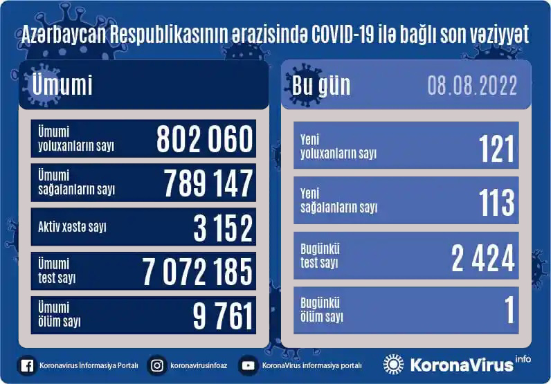
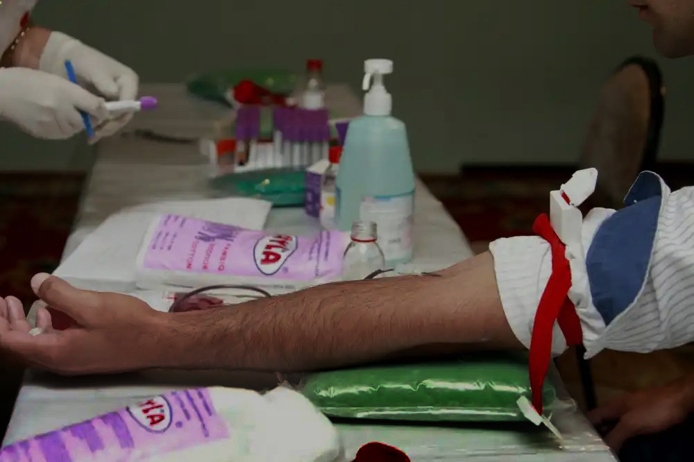

Vebinarlar
Canlı yayım
MedNews
Daxil ol
Xəbərlər
Layihələr
Kitablar
Arxivlər
Məqalələr
Vebinarlar
Canlı yayım
Forum
Sürətli keçidlər:
"Üç həftəyə Azərbaycanda qırğın günlər başlayacaq" -
PROQNOZ
Yoluxma bu səbəbə görə artıb - Mütəxəssisdən
AÇIQLAMA
“Sputnik V” vurduranlar bu ölkəyə
buraxılmayacaqlar

Son sutkada COVID-19-dan 1 nəfər vəfat edib
Ətraflı
TƏBİB-dən qanvermə aksiyaları ilə bağlı AÇIQLAMA

50 kq çəkidən aşağı olanlar qan verə bilər? - Nazirlikdən AÇIQLAMA
Son xəbərlər
Son sutkada COVID-19-dan 1 nəfər vəfat edib-17:00/08.08.22
TƏBİB-dən qanvermə aksiyaları ilə bağlı AÇIQLAMA-12:28/08.08.22
Bakı-Ələt yolunda qəza: 5 nəfər KTM-ə yerləşdirildi-11:56/08.08.22
50 kq çəkidən aşağı olanlar qan verə bilər? - Nazirlikdən AÇIQLAMA-10.27/08.08.22
ABŞ prezidenti koronavirusdan sağaldı-09:58/08.08.22
İsveçdə doğum son 20 ilin ən aşağı həddinə düşüb-09:56/08.08.22
Dünyada yoluxma: 589 587 346-00:00/08.08.22
EKSPERT: "Donor olmaq üçün lazım olan rəsmi sənəd şəxsiyyət vəsiqəsidir"-00:00/08.08.22
Beynəlxalq Oftalmoloqlar Günü - 8 avqust-00:00/08.08.22
ABŞ-da 43 ildən sonra ilk dəfə poliomielitə yoluxma təsdiqləndi-10:41/22.07.22
Bizə zəng edin :
+994 55 455 68 68

.jpg)